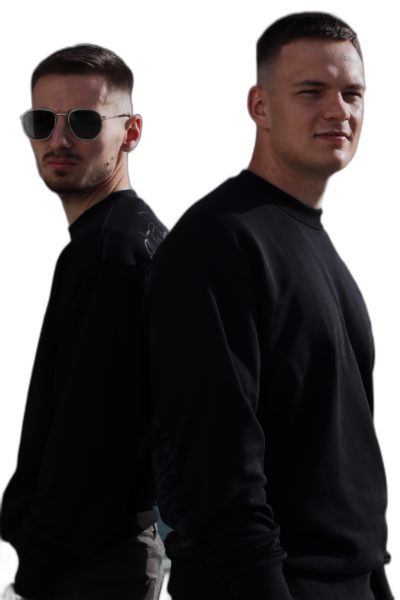

A SATELLITE84 egy magyar proper/groove techno formáció, amit SPI3GEL és Franzis Mate alapított 2023-ban. A páros a kezdetekkor egy online rádióban szerepelt, később már az Elysium rezidenseként bizonyított különböző pécsi klubokban és olyan budapesti helyeken, mint az A38 Hajó vagy az Arzenál.
